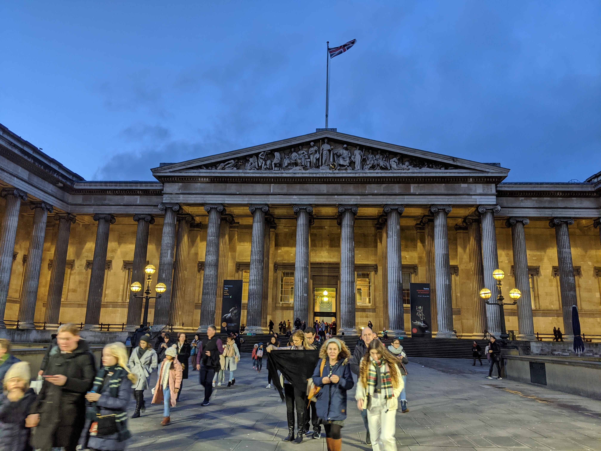

I took a trip to London in February 2020. It was my first time being in Europe. What impressed me most was the British Museum. You can easily spend several days in there and it costs £0 to get in! I spent about two days in there.
The Main Entrance
The architecture of the British Museum itself is quite beautiful. Here is what the main entrance looks like:
